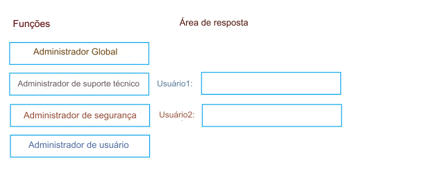

104- ARRASTE E SOLTE
Você tem uma assinatura do Microsoft 365 que contém dois usuários chamados Usuário1 e Usuário2.
Você precisa garantir que os usuários possam executar as seguintes tarefas:
• O usuário1 deve ser capaz de criar grupos e gerenciar usuários.
• O usuário2 deve ser capaz de redefinir senhas de usuários não administrativos.
A solução deve usar o princípio do menor privilégio.
Qual função você deve atribuir a cada usuário?
Para responder, arraste as funções apropriadas para os usuários corretos.
Cada
função pode ser usada uma vez, mais de uma vez ou nunca ser usada.
Talvez seja necessário arrastar a barra de divisão entre os
painéis ou rolar para visualizar o conteúdo.
NOTA: Cada seleção correta vale um ponto.
